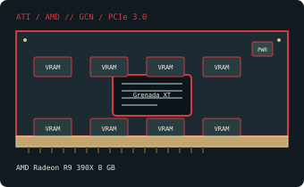

[ PCI EXPRESS GRAPHICS // IDENTIFIED COMPONENT ]
AMD Radeon R9 390X 8 GB
Grenada XT, 2015. This record identifies the listed retail model/configuration; board-partner variations are called out separately.

MODEL / VARIANT: 8 GB reference-class Radeon R9 390X (Grenada XT), separate from R9 390 and Hawaii-based R9 290X. Many partner cards change cooling, clocks and connectors.
Recorded specifications
| Cataloged product | AMD Radeon R9 390X 8 GB |
|---|---|
| GPU / architecture / launch | Grenada XT; 2015. |
| Core & memory | Grenada XT GPU; 2,816 stream processors; 8 GB GDDR5 on a 512-bit bus; reference clock up to 1,050 MHz GPU and 1,500 MHz memory (6.0 GT/s effective). |
| Host interface & power | PCI Express 3.0 x16; original reference configuration uses one 6-pin and one 8-pin PCIe power connector. 275 W reference board-power class; high sustained heat output means PSU capacity and case airflow are important. Custom partner cards may require two 8-pin plugs. |
| Typical reference outputs | Reference configuration: dual-link DVI, HDMI 1.4a and DisplayPort 1.2; partner boards can change outputs. |
| Board dimensions | Reference-class board length is approximately 275 mm; partner coolers can be longer and vary in height/thickness. For example, the MSI R9 390X GAMING 8G is 277 × 129 × 51 mm (L × H × T). Verify the exact board before installation. |
| Variant boundary | 8 GB reference-class Radeon R9 390X (Grenada XT), separate from R9 390 and Hawaii-based R9 290X. Many partner cards change cooling, clocks and connectors. |
Compatibility, service & archival notes
Confirm both reference power leads (or the exact partner board requirement), PSU rating and thermal clearance; this high-power card is not a low-profile upgrade. A PCIe 3.0 x16 slot is expected, with lower generations platform-dependent. Use an OS/driver branch that still supports the device ID; check monitor inputs and the actual board’s output panel.
- Check the exact slot keying/signaling, board dimensions, auxiliary-power pinout, PSU guidance, airflow and display outputs for the specimen; connector appearance alone does not establish compatibility.
- Install a driver supporting the recorded device ID and target OS. Preserve the original driver and firmware versions before making changes.
- Record board partner, PCB and cooler revision, device/subsystem IDs, BIOS, adapter set and physical condition. Do not power a card with damage, corrosion, obstructed cooling or suspected shorts.
Manufacturer, model & standards sources
- AMD Radeon R9 390X 8 GB specifications — TechPowerUp GPU DatabaseIndependent model-level GPU, memory and interface reference; board revisions may vary.
- AMD legacy graphics drivers and support archiveManufacturer driver-support reference; select the product family, device ID and operating system that match the card.
- PCI-SIG PCI Express specificationsPCI Express compatibility reference; board revision, connector count and cooling remain model-specific.
- AMD product support and driver selectionAMD manufacturer support reference for identifying a compatible driver branch and operating system; availability depends on product age.
- MSI R9 390X GAMING 8G specificationsBoard-manufacturer reference for this example card’s dimensions and board-specific fit; other R9 390X boards differ.
GPU-family references do not supersede the card manufacturer’s manual, nameplate or board revision for a specific specimen.